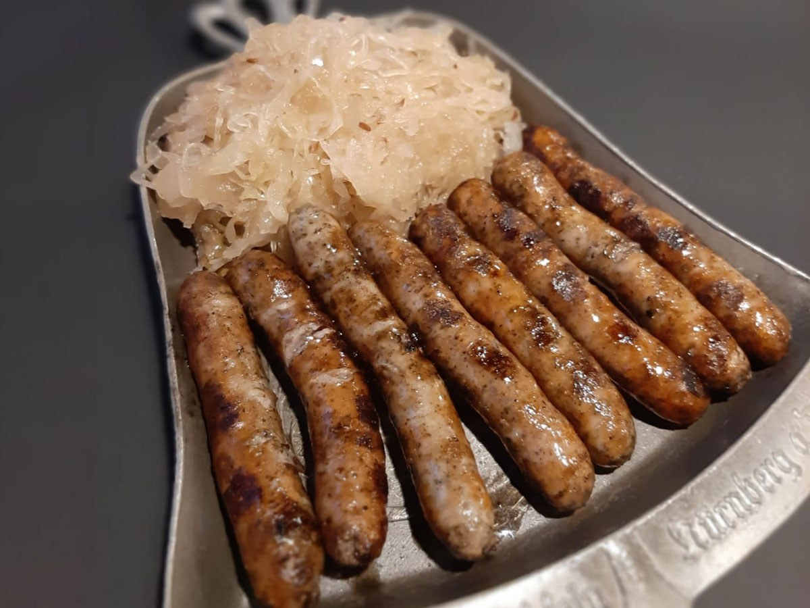
| 営業時間 | 月〜土 11:00〜22:00（グリルは21:00まで）。日曜は公式サイト内で「休み」と「11:00〜17:00（グリル16:00まで）」の両記載あり、要確認 |
|---|---|
| 定休日 | 日曜（上記のとおり公式内で記載が割れる） |
| 住所 | Handwerkerhof 11, 90402 Nürnberg |
| 予約 | 可（電話・メール info@bratwurstgloecklein.de）。昼どきは混むが回転は速い — ☎ +49 911 227625 ／ 公式サイト |
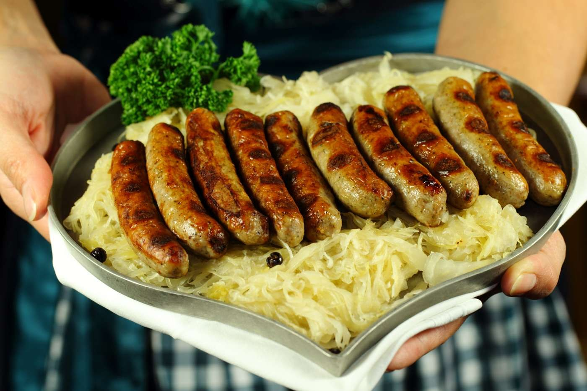
| 営業時間 | 毎日 11:00〜22:30 |
|---|---|
| 定休日 | なし（年中無休の表記） |
| 住所 | Rathausplatz 6, 90403 Nürnberg |
| 予約 | 推奨（公式サイトの予約フォーム・電話）。団体客が多い — ☎ +49 911 214860 ／ 公式サイト |
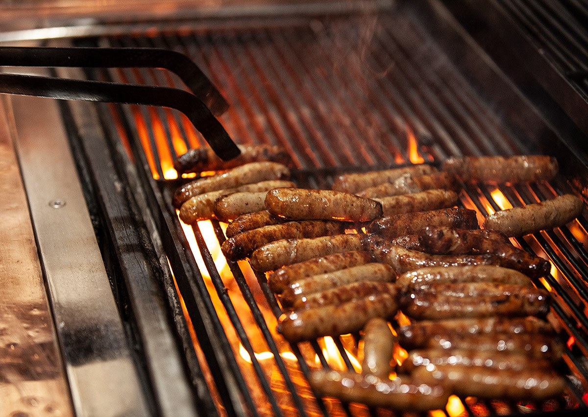
| 営業時間 | 毎日 11:00〜22:00（料理は21:30まで） |
|---|---|
| 定休日 | なし（「定休日はありません」と明記） |
| 住所 | Zirkelschmiedsgasse 26, 90402 Nürnberg |
| 予約 | 推奨（公式サイトのオンライン予約・電話） — ☎ +49 911 2059288 ／ 公式サイト |
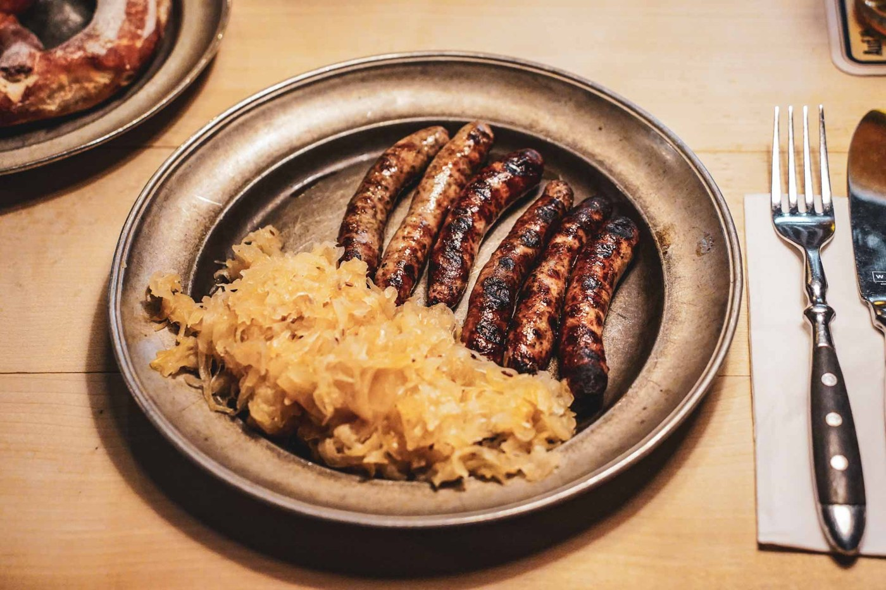
| 営業時間 | 月〜土 11:00〜22:00、日 11:00〜20:00 |
|---|---|
| 定休日 | なし（公式の営業時間に休業日の記載なし） |
| 住所 | Rathausplatz 1, 90403 Nürnberg |
| 予約 | 可（電話・メール info@bratwursthaeusle-nuernberg.com） — ☎ +49 911 227695 ／ 公式サイト |
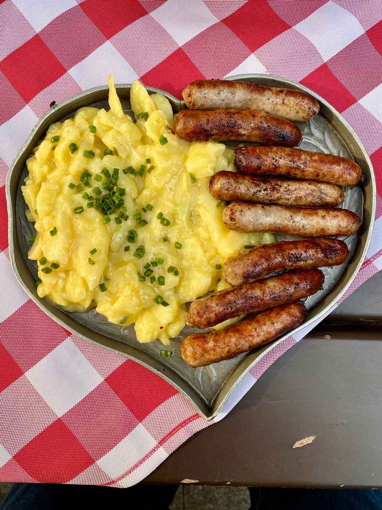
| 営業時間 | 火〜日 11:00〜23:00 |
|---|---|
| 定休日 | 月曜 |
| 住所 | Glöckleinsgasse 2, 90403 Nürnberg |
| 予約 | 推奨（電話・メール info@goldenes-posthorn.de） — ☎ +49 911 225153 ／ 公式サイト |
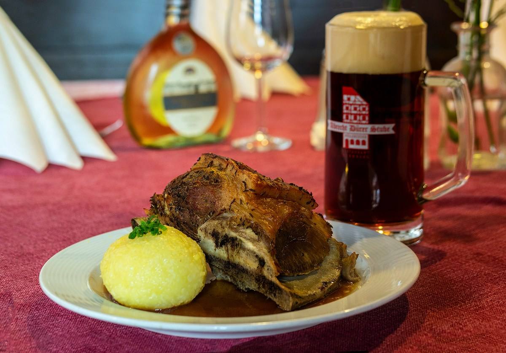
| 営業時間 | 月〜土 17:30〜24:00（料理は22:00まで）／金曜は昼 11:30〜15:00も営業。11〜12月は日曜 11:30〜15:00も営業。クリスマスマーケット期間は土日の昼 11:30〜15:00も営業 |
|---|---|
| 定休日 | 日曜（11〜12月とクリスマスマーケット期間は日曜昼のみ営業）。夏季休業あり（2026年は8月2日〜25日） |
| 住所 | Albrecht-Dürer-Straße 6, 90403 Nürnberg |
| 予約 | 推奨（電話 0911-227209 またはメール。携帯番号の記入を求めている。10分以上遅れる場合は要連絡） — ☎ +49 911 227209 ／ 公式サイト |
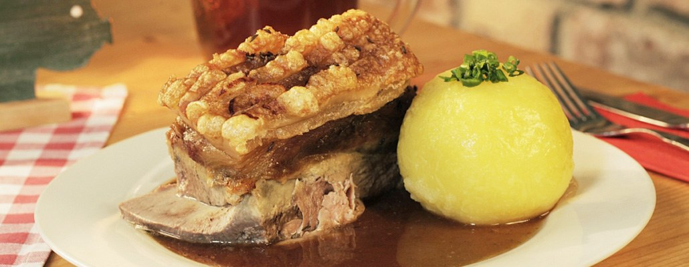
| 営業時間 | 月〜土 12:00〜14:00／17:00〜22:00、日曜・祝日 11:00〜22:00 |
|---|---|
| 定休日 | なし（公式サイトに定休日の記載なし） |
| 住所 | Schweiggerstraße 19, 90478 Nürnberg |
| 予約 | 推奨（電話 0911-4597325。公式サイトが予約を勧めている） — ☎ +49 911 4597325 ／ 公式サイト |
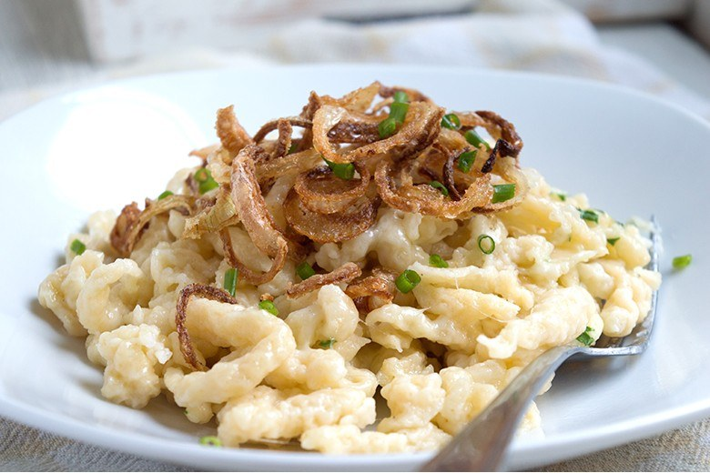
| 営業時間 | 火〜土 11:00〜22:00（料理 21:30まで）／日曜・祝日 11:00〜21:00（料理 20:00まで） |
|---|---|
| 定休日 | 月曜 |
| 住所 | Vestnertorgraben 4, 90408 Nürnberg |
| 予約 | 可（翌日以降は公式サイトの予約フォーム、当日は電話 0911-49029095） — ☎ +49 911 49029095 ／ 公式サイト |
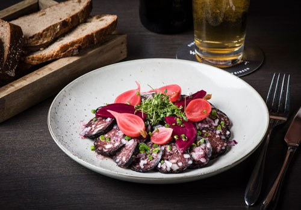
| 営業時間 | 月〜土 11:00〜22:00（料理は通しで21:00まで）／日曜 12:00〜20:00（料理は19:00まで） |
|---|---|
| 定休日 | なし |
| 住所 | Waaggasse 2-6, 90403 Nürnberg |
| 予約 | 可（公式サイトから予約。団体・貸切はメール info@die-wirtschaft-nuernberg.de） — ☎ +49 911 47778585 ／ 公式サイト |
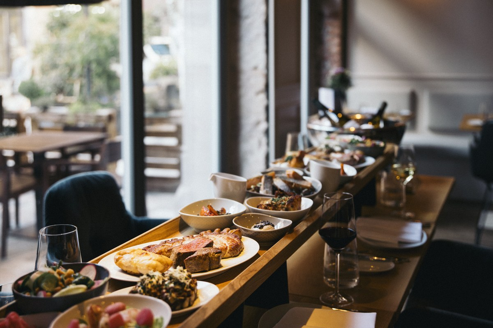
| 営業時間 | 月〜木 11:30〜23:00／金・土 11:30〜24:00 |
|---|---|
| 定休日 | 日曜（一部の日曜はブランチ・催しのみ営業） |
| 住所 | Königstraße 70, 90402 Nürnberg |
| 予約 | 可（公式サイトのオンライン予約、または電話 0911-24029955） — ☎ +49 911 24029955 ／ 公式サイト |
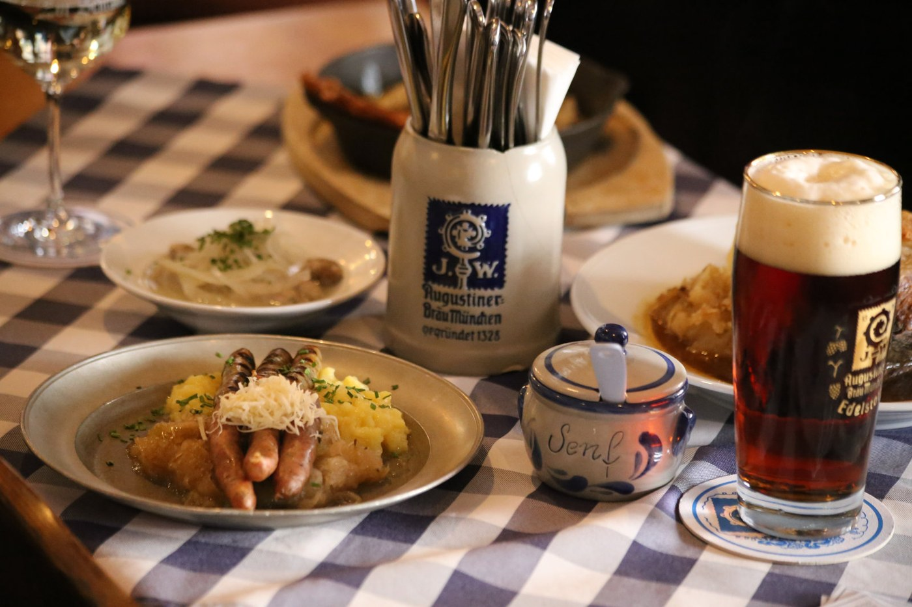
| 営業時間 | 月・火・木〜日 11:00〜23:00（料理は通しで22:00まで） |
|---|---|
| 定休日 | 水曜（観光局の頁は無休と記載。公式サイトを採用） |
| 住所 | Beim Tiergärtnertor 3, 90403 Nürnberg |
| 予約 | 可（公式サイトからオンライン予約、電話 0911-99289650。10人以上はメール info@zurschranke.de） — ☎ +49 911 99289650 ／ 公式サイト |
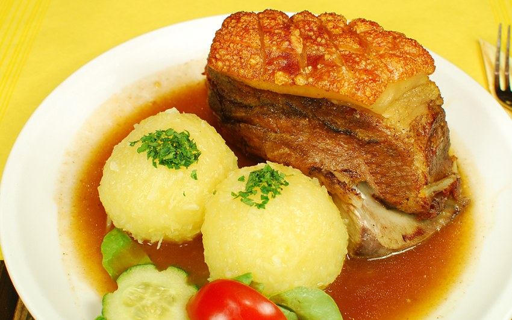
| 営業時間 | 火〜土 17:00〜22:00（料理 21:00まで）／日曜・祝日 11:30〜15:00 |
|---|---|
| 定休日 | 月曜 |
| 住所 | Bismarckstraße 43, 90491 Nürnberg |
| 予約 | 電話のみ（0911-5980646）。持ち帰りも電話で事前注文 — ☎ +49 911 5980646 ／ 公式サイト |
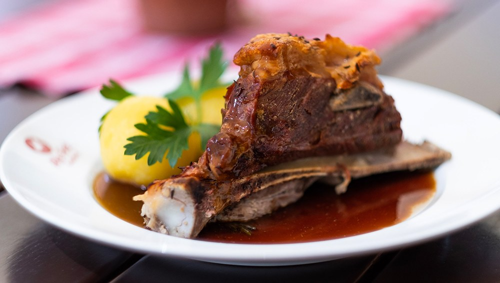
| 営業時間 | 料理は 11:30〜21:00（水・木以外の毎日）。持ち帰りは 11:30〜20:00（日曜は 11:30〜12:00・15:00〜18:00） |
|---|---|
| 定休日 | 水曜・木曜。2026年11月3日（16時）〜12日は休業 |
| 住所 | Kraftshofer Hauptstraße 164, 90427 Nürnberg |
| 予約 | 推奨（電話 0911-305863 またはメール reserv@altepost.net） — ☎ +49 911 305863 ／ 公式サイト |
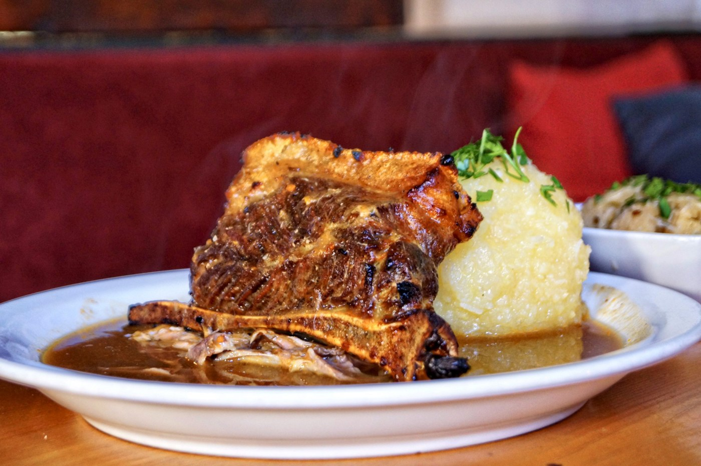
| 営業時間 | 火〜土 11:00〜22:00（料理の注文は21:30まで）／日・祝 11:00〜19:00（料理の注文は18:00まで） |
|---|---|
| 定休日 | 月曜 |
| 住所 | Am Ölberg 10, 90403 Nürnberg |
| 予約 | 推奨（当日は電話、翌日以降は公式サイトの予約フォーム） — ☎ +49 911 23489844 ／ 公式サイト |
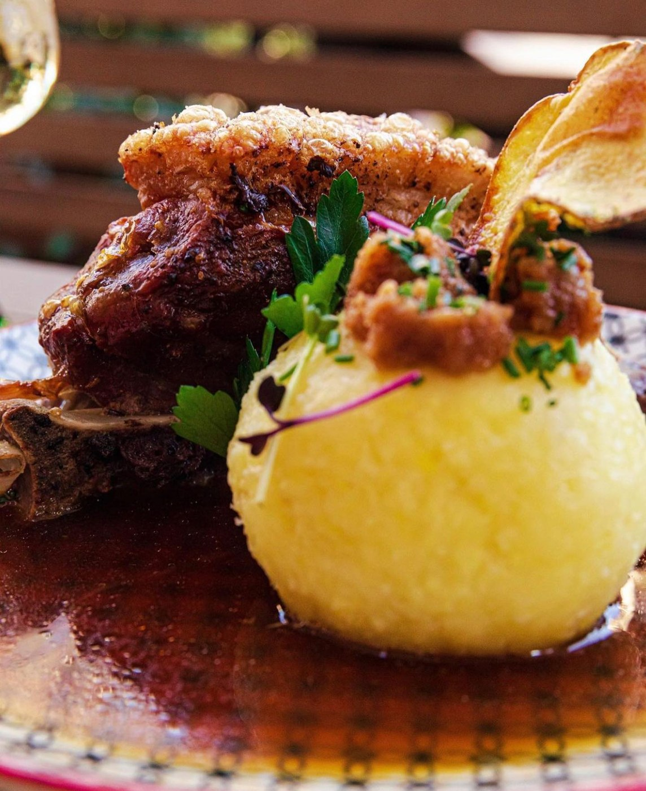
| 営業時間 | 未確認（公式サイト・観光局とも記載なし） |
|---|---|
| 定休日 | 未確認 |
| 住所 | Königstraße 78, 90402 Nürnberg |
| 予約 | 推奨（公式サイトの「Tisch reservieren」または電話） — ☎ +49 911 214560 ／ 公式サイト |
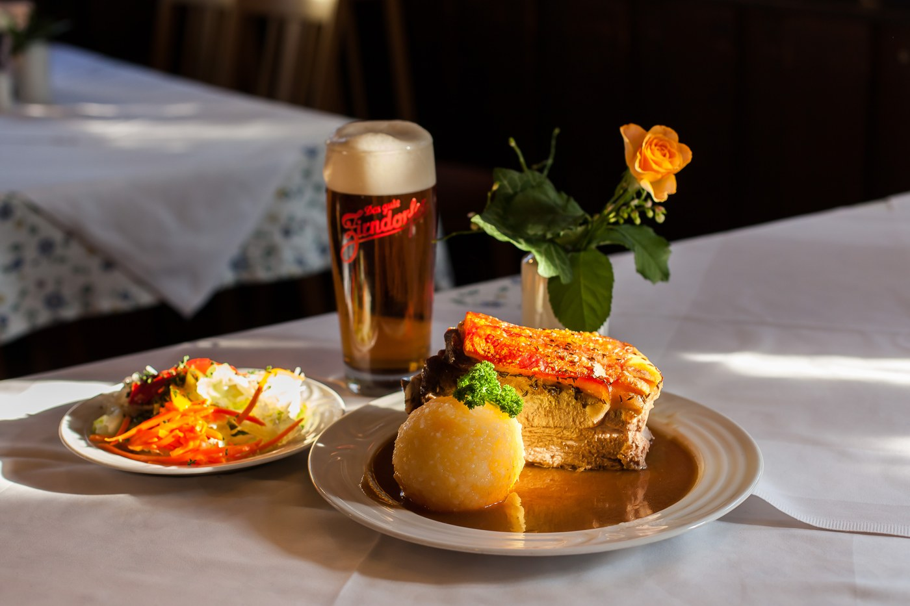
| 営業時間 | 火〜木 11:00〜22:00／金・土 11:00〜23:00／日・祝 11:00〜20:00（観光局の記載） |
|---|---|
| 定休日 | 月曜（観光局の記載に月曜が無い。公式サイトに定休日の明記なし） |
| 住所 | Wilhelm-Spaeth-Straße 47-49, 90461 Nürnberg |
| 予約 | 可（公式サイトのオンライン予約または電話） — ☎ +49 911 949560 ／ 公式サイト |
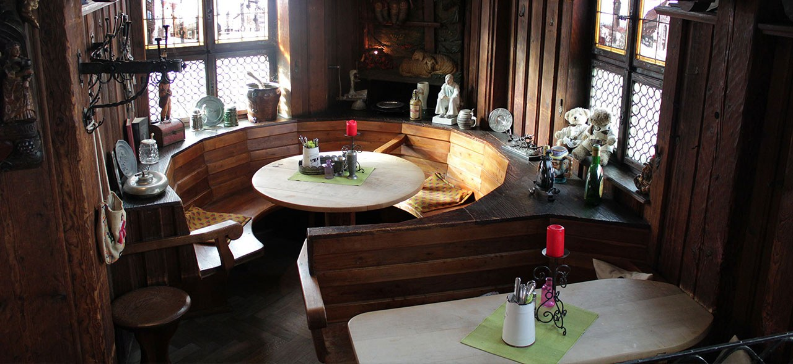
| 営業時間 | 毎日 11:00〜23:00（料理は通しで提供） |
|---|---|
| 定休日 | なし |
| 住所 | Trödelmarkt 30, 90403 Nürnberg |
| 予約 | 推奨（6人未満と当日分は電話のみ。6人以上は公式サイトのフォーム。少人数は相席になる場合あり） — ☎ +49 911 36772767 ／ 公式サイト |
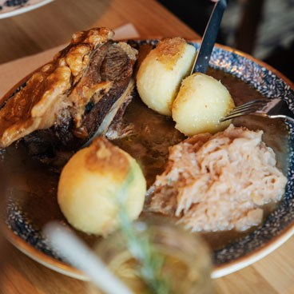
| 営業時間 | 毎日 11:30〜（閉店時刻は公式に記載なし。OpenTable の表示では日〜木23:00・金土24:00まで） |
|---|---|
| 定休日 | なし |
| 住所 | Am Kartäusertor 1, 90402 Nürnberg |
| 予約 | 推奨（OpenTable・電話・メール） — ☎ +49 911 47779480 ／ 公式サイト |
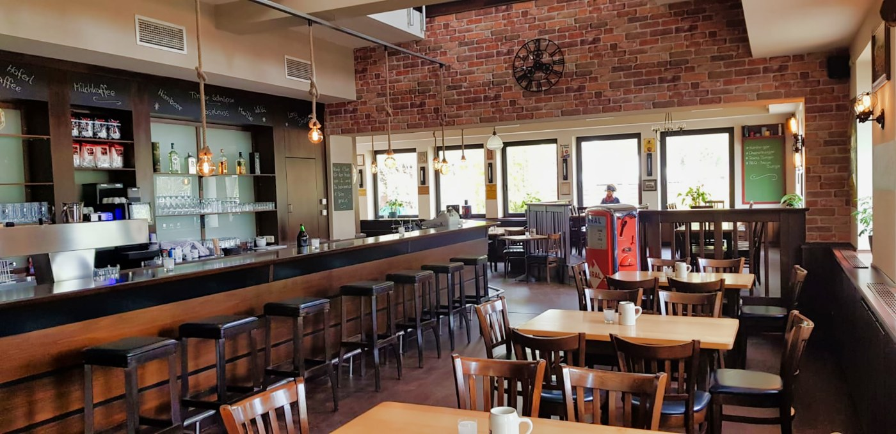
| 営業時間 | 火〜木 17:00〜22:00／金 17:00〜23:00／土 16:00〜23:00／日・祝 12:00〜21:00（公式サイト。観光局は月〜金16:30〜23:00・土12:00〜23:00・日祝12:00〜21:00と記載） |
|---|---|
| 定休日 | 月曜（公式サイトに月曜の記載なし。観光局の記載とは食い違う） |
| 住所 | Kleestraße 28, 90461 Nürnberg |
| 予約 | 可（電話のみ。メールでの予約は不可） — ☎ +49 911 43336497 ／ 公式サイト |
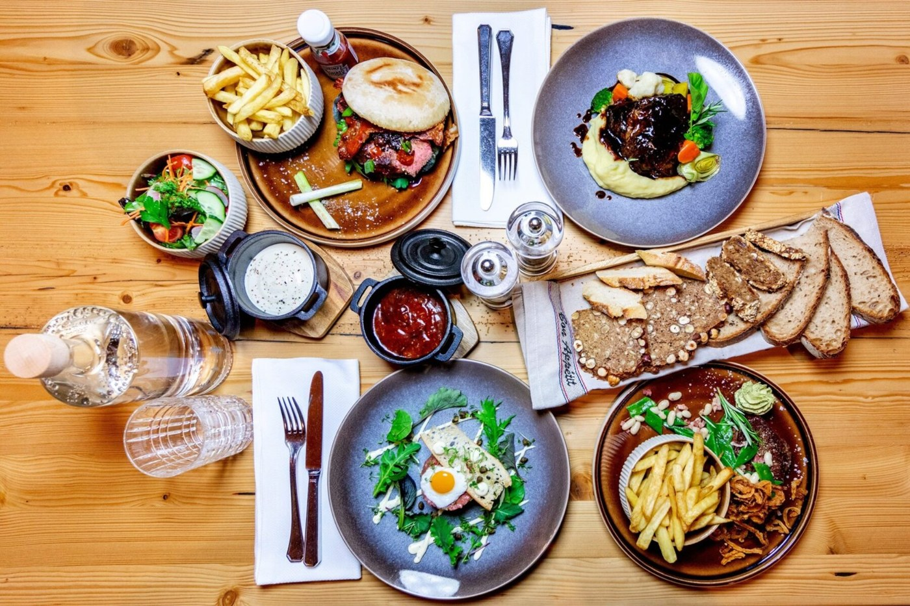
| 営業時間 | 月〜土 17:00〜22:00 |
|---|---|
| 定休日 | 日曜（祝日はほぼ休み。イースター・クリスマス・大晦日は毎年休業） |
| 住所 | Bregenzer Straße 31, 90475 Nürnberg |
| 予約 | 推奨（OpenTable・電話。平日も混むと公式に記載）。支払いはカードのみ（現金不可） — ☎ +49 911 8007236 ／ 公式サイト |
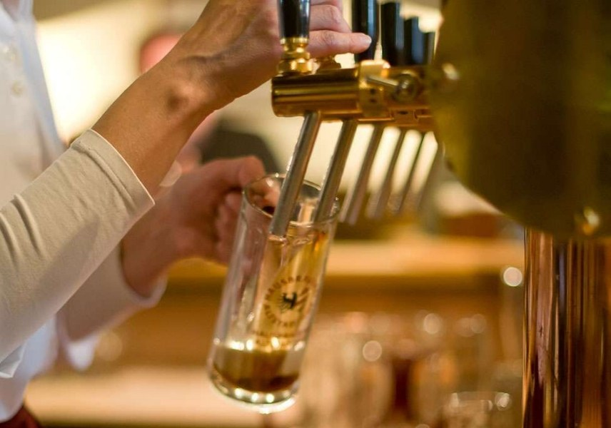
| 営業時間 | 月〜木 11:00〜23:00／金・土 11:00〜24:00／日 11:00〜23:00（料理は月〜金 12:00〜14:30・17:00〜22:00、土日祝 11:00〜22:00）。別室レストラン「ビューネ」は火〜金17:00〜23:00・土12:00〜24:00・日12:00〜18:00 |
|---|---|
| 定休日 | 無休（別室レストラン「ビューネ」は月曜休み） |
| 住所 | Bergstraße 19, 90403 Nürnberg |
| 予約 | 可（公式サイトのテーブル予約フォーム・電話） — ☎ +49 911 2449859 ／ 公式サイト |
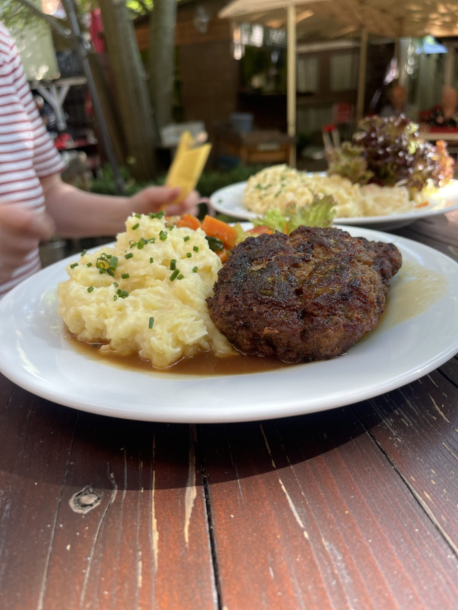
| 営業時間 | 火〜金 15:00〜24:00／土 11:00〜24:00／日 11:00〜22:00（料理は土日12:00〜、平日15:00〜。日曜の料理は21時まで） |
|---|---|
| 定休日 | 月曜 |
| 住所 | Adam-Klein-Straße 27, 90429 Nürnberg |
| 予約 | 可（電話 0911-93776790 か reservierung@schanzenbraeu.de。メールは確認の返信を待つ。団体は10人まで） — ☎ +49 911 93776790 ／ 公式サイト |
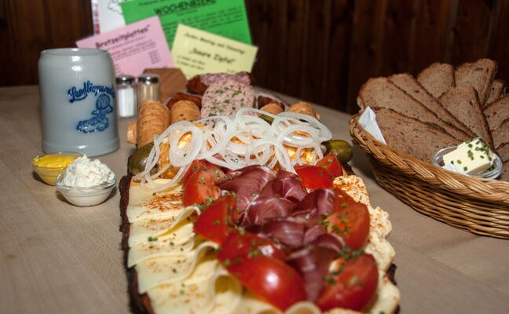
| 営業時間 | 月・火 17:30〜24:00／水・木 17:30〜翌1:00／金 14:00〜翌1:00／土 12:00〜翌1:00／日祝 11:00〜24:00 |
|---|---|
| 定休日 | 無休 |
| 住所 | Wodanstraße 15, 90461 Nürnberg |
| 予約 | 推奨（電話か公式サイトの問い合わせフォーム。当日分のメール予約は受け付けない） — ☎ +49 911 468882 ／ 公式サイト |
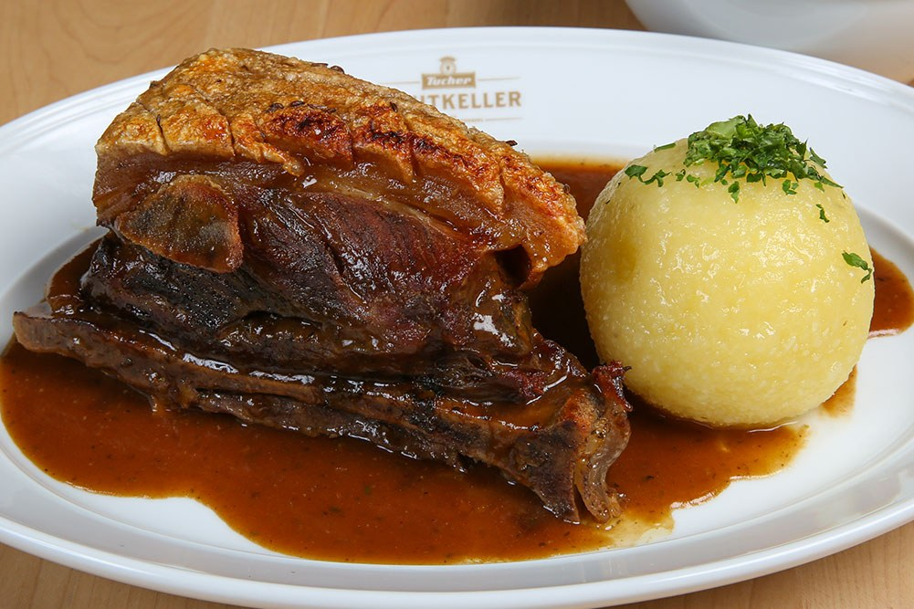
| 営業時間 | 月〜土 12:00〜23:00（料理は22時まで） |
|---|---|
| 定休日 | 日曜・祝日（アドベントの日曜は営業） |
| 住所 | Hallplatz 2, 90402 Nürnberg |
| 予約 | 可（公式サイトのオンライン予約。確認はメールで届く） — ☎ +49 911 24464433 ／ 公式サイト |
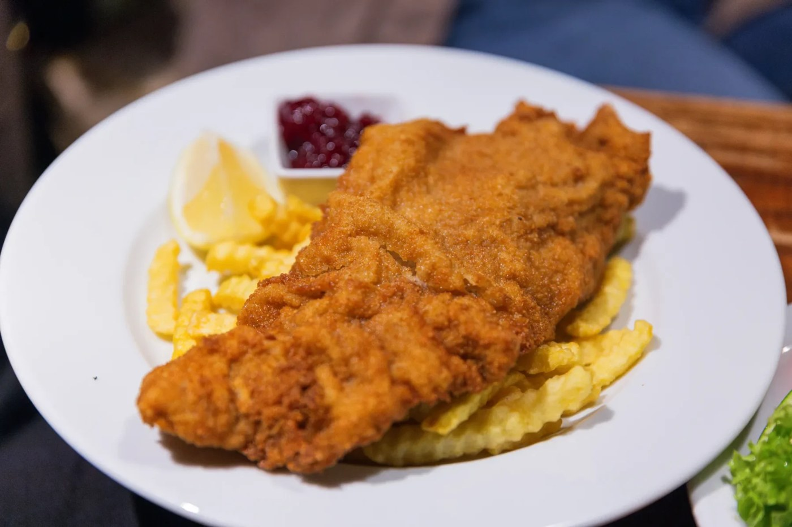
| 営業時間 | 月・水〜日 11:00〜24:00（料理は土曜まで21:30、日祝21:00まで） |
|---|---|
| 定休日 | 火曜（大型見本市の期間は17時から、クリスマス市の期間は11時から営業） |
| 住所 | Bergstraße 20, 90403 Nürnberg |
| 予約 | 可（公式サイトの予約ページ・電話） — ☎ +49 911 2019881 ／ 公式サイト |
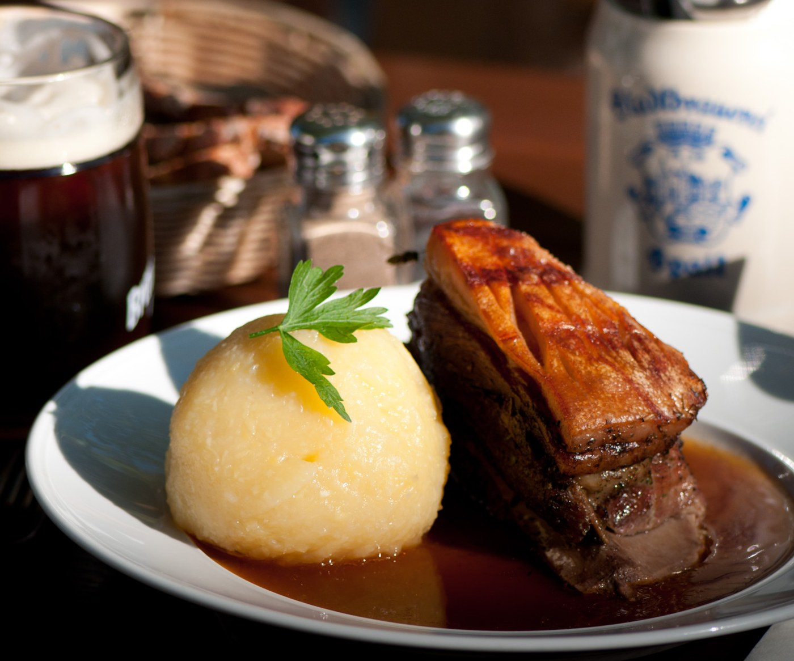
| 営業時間 | 冬（2026年10月6日〜）：火〜金 17:00〜23:00／土日祝 12:00〜23:00。夏のビアガーデン期：月〜金 16:00〜23:00／土 12:00〜23:00 |
|---|---|
| 定休日 | 冬は月曜、夏は日曜 |
| 住所 | Hintere Insel Schütt 34, 90403 Nürnberg |
| 予約 | 可（電話・公式サイトの予約フォーム） — ☎ +49 911 2427740 ／ 公式サイト |
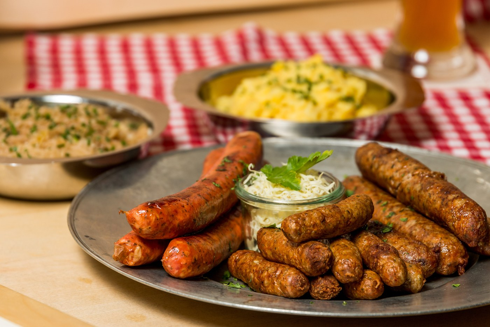
| 営業時間 | 火〜日 12:00〜23:00（料理は12:00〜21:00通し） |
|---|---|
| 定休日 | 月曜 |
| 住所 | Marienbergstraße 110, 90411 Nürnberg |
| 予約 | 可（電話・メール kontakt@tucherhof.de） — ☎ +49 911 5209777 ／ 公式サイト |
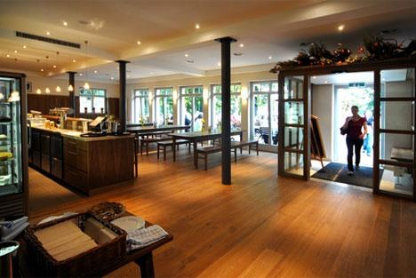
| 営業時間 | 月〜土 10:00〜23:00／日 10:00〜22:00（朝食10〜12時、温かい料理は11時から） |
|---|---|
| 定休日 | 無休 |
| 住所 | Bayernstraße 150, 90478 Nürnberg |
| 予約 | 可（公式サイトのテーブル予約・電話） — ☎ +49 911 988187710 ／ 公式サイト |
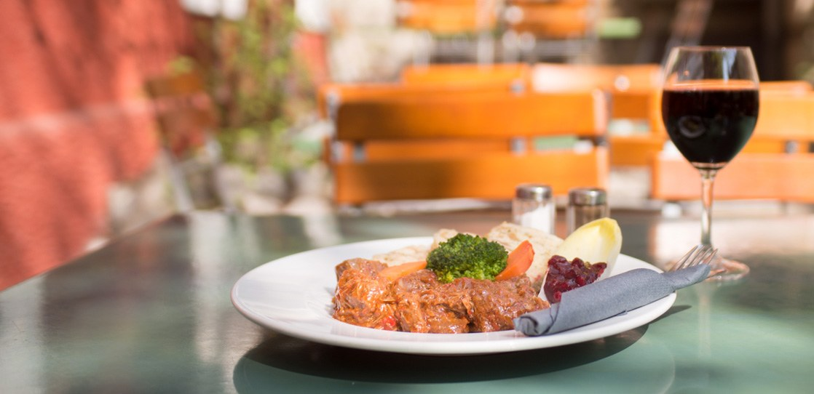
| 営業時間 | 日〜金 11:30〜翌1:00／土 14:00〜翌1:00 |
|---|---|
| 定休日 | 無休 |
| 住所 | Kernstraße 46, 90429 Nürnberg |
| 予約 | 可（電話のみ 0911-260043） — ☎ +49 911 260043 ／ 公式サイト |
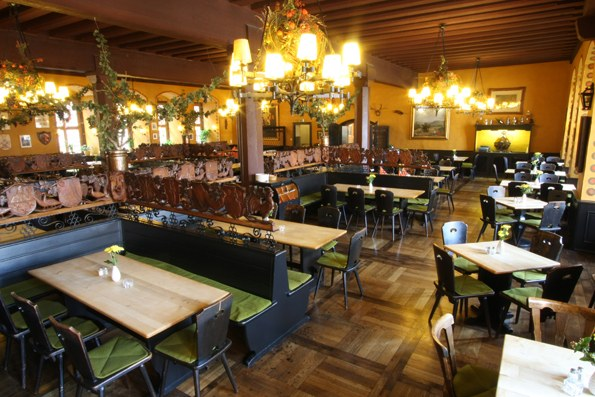
| 営業時間 | 毎日 11:30〜23:00（料理は通しで22:00まで） |
|---|---|
| 定休日 | 無休 |
| 住所 | Spitalgasse 16, 90403 Nürnberg |
| 予約 | 可（公式サイトのオンライン予約は10人まで。それ以上は電話かメール） — ☎ +49 911 221761 ／ 公式サイト |
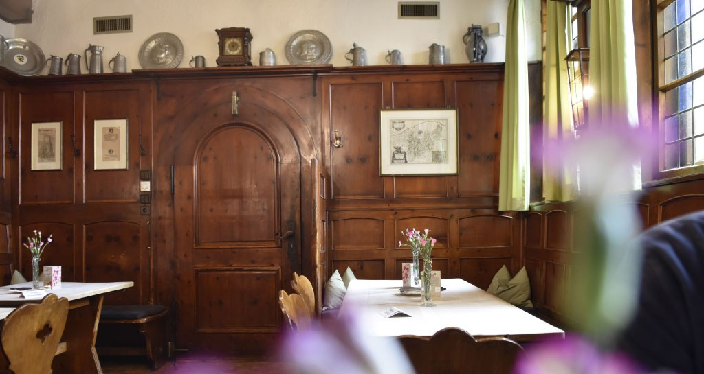
| 営業時間 | 冬（〜2027年4月）：月 17:00〜23:00／火〜土 11:30〜14:30・17:00〜23:00（料理は11:30〜14:00・17:30〜21:00）。夏は月曜休み |
|---|---|
| 定休日 | 日曜・祝日（夏は月曜も休み） |
| 住所 | Knorrstraße 2-8, 90402 Nürnberg |
| 予約 | 可（公式サイトのオンライン予約・電話。OpenTableにも掲載） — ☎ +49 911 202280 ／ 公式サイト |
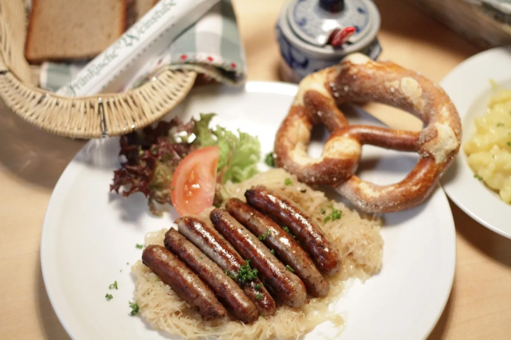
| 営業時間 | 月〜土 12:00〜21:00／日 12:00〜18:00 |
|---|---|
| 定休日 | 祝日 |
| 住所 | Am Königstor 5 (Handwerkerhof), 90402 Nürnberg |
| 予約 | 可（電話・メール info@fraenkischeweinstube.com） — ☎ +49 911 223104 ／ 公式サイト |
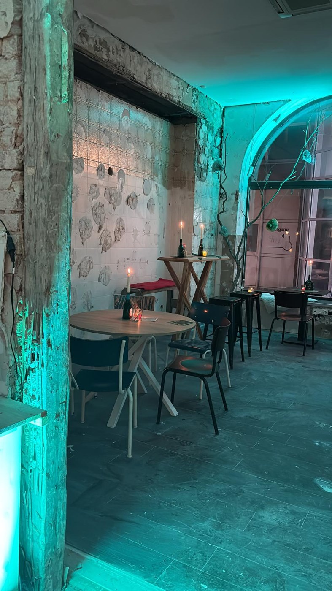
| 営業時間 | 水〜金 17:30〜／土 16:00〜／日 15:00〜20:00（閉店時刻の記載なし） |
|---|---|
| 定休日 | 月曜・火曜 |
| 住所 | Königstraße 76, 90402 Nürnberg |
| 予約 | 可（公式サイトのオンライン予約） — ☎ +49 15565 812729 ／ 公式サイト |
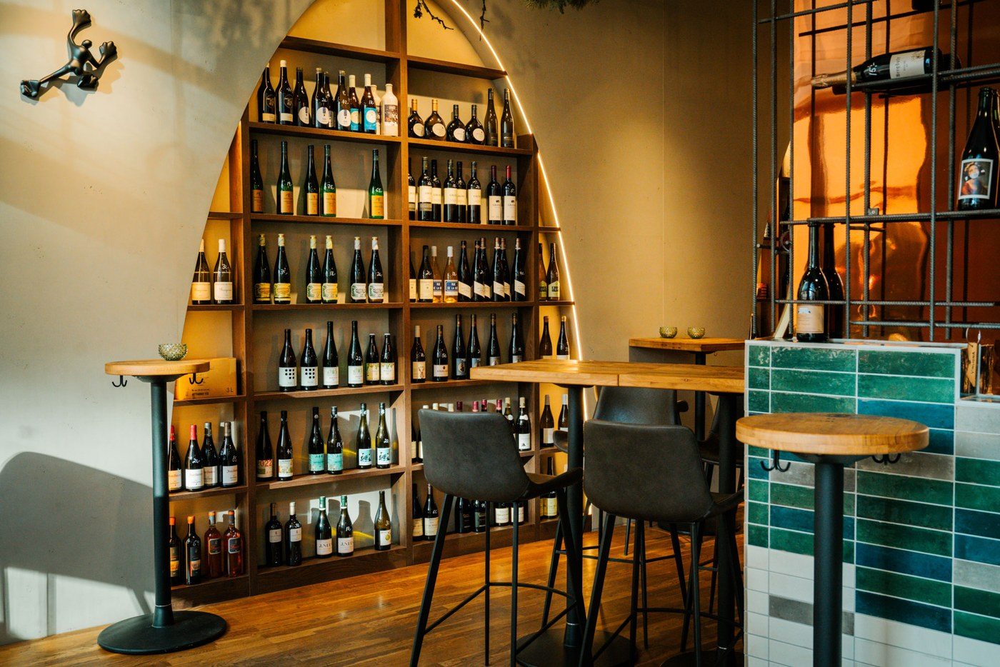
| 営業時間 | バー 水〜日 15:00〜22:00（ワインの店頭販売は水〜土 15:00〜20:00） |
|---|---|
| 定休日 | 月曜・火曜 |
| 住所 | Weinmarkt 14, 90403 Nürnberg |
| 予約 | 未確認（予約の方法は公式サイトに記載なし。電話かメール info@075-wein.de で問い合わせ） — ☎ +49 911 30020322 ／ 公式サイト |
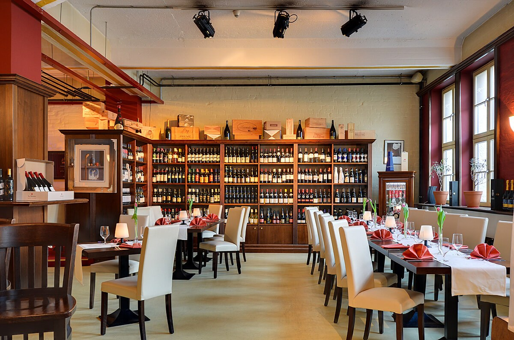
| 営業時間 | 月〜土 16:30〜22:30 |
|---|---|
| 定休日 | 日曜 |
| 住所 | Kleinreuther Weg 87, 90408 Nürnberg |
| 予約 | 推奨（電話） — ☎ +49 911 3001950 ／ 公式サイト |
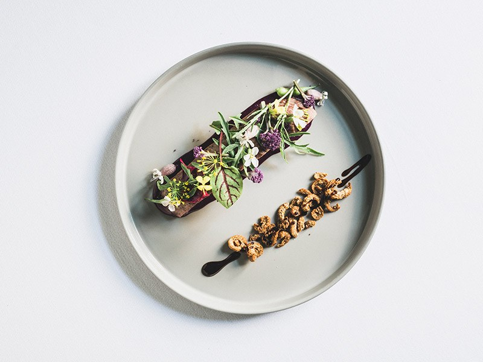
| 営業時間 | 水〜土 12:00〜15:00・19:00〜24:00（料理の受付は12:00〜13:00・19:00〜20:15。予約枠は12:00/12:30/19:00/19:30） |
|---|---|
| 定休日 | 日・月・火 |
| 住所 | Weinmarkt 3, 90403 Nürnberg |
| 予約 | 要（公式サイトの予約ページから。24時間前までは無料で取消、それ以降・無断欠席は1人150ユーロ。10人以上はメール） — ☎ +49 911 225131 ／ 公式サイト |
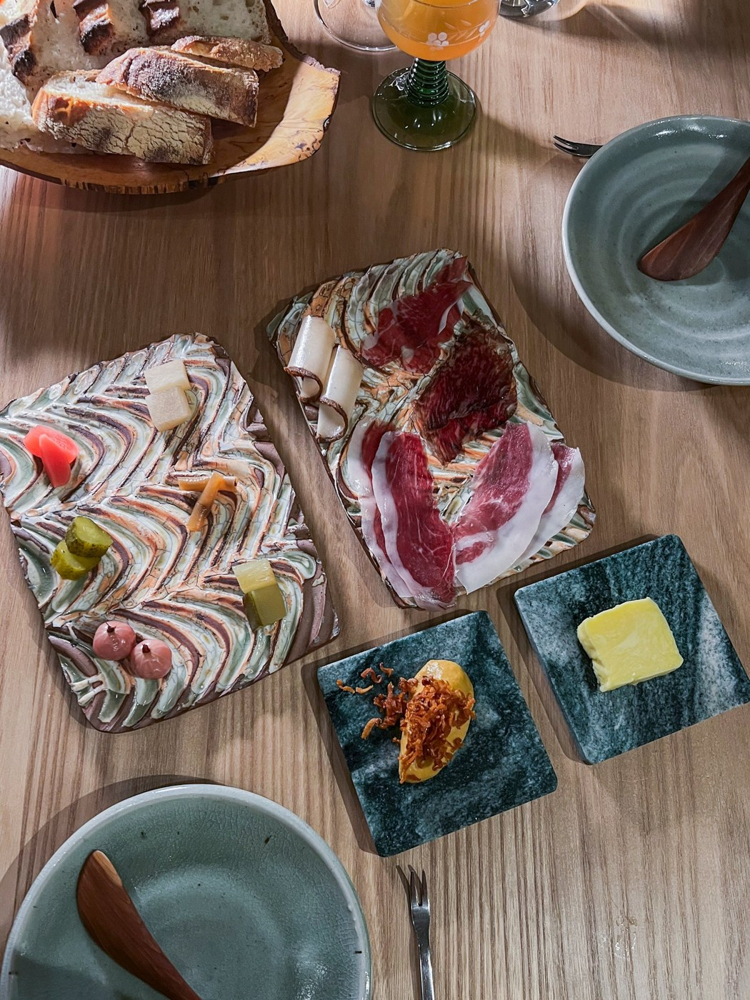
| 営業時間 | 木〜土 18:30〜23:00ごろ（全員同時に開始）。電話受付は水〜土14:00〜18:00 |
|---|---|
| 定休日 | 日・月・火・水 |
| 住所 | Wiesentalstraße 40, 90419 Nürnberg |
| 予約 | 要（公式サイトで事前決済の予約。48時間前までは無料で変更・取消、それ以降は1人50ユーロ。満席時はキャンセル待ちに登録可） — ☎ +49 911 47712809 ／ 公式サイト |
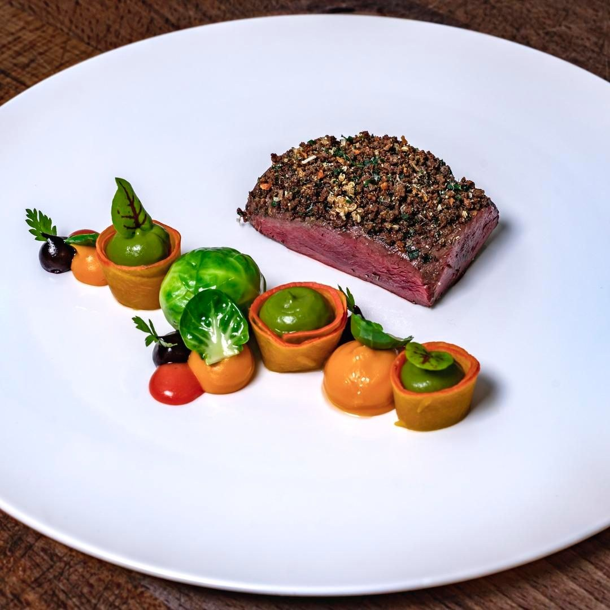
| 営業時間 | 夜のみ。18:00と19:00の2回開始（公式）。営業曜日の一覧は公式サイトになく要確認（水・木は3皿のおまかせの提供日として公式に記載。ミシュランの頁は金曜18:00〜21:30のみを表示しており、公式と食い違う） |
|---|---|
| 定休日 | 日・月・祝日（同じ建物のガストハウス・ロットナーの定休日。ヴァイトヴェルク単独の定休日は未確認） |
| 住所 | Winterstraße 15, 90431 Nürnberg |
| 予約 | 要（公式サイトの予約ページ・電話。菜食やアレルギーは事前に連絡。3皿のおまかせは予約時に「Überraschungsmenü」と伝える） — ☎ +49 911 612032 ／ 公式サイト |
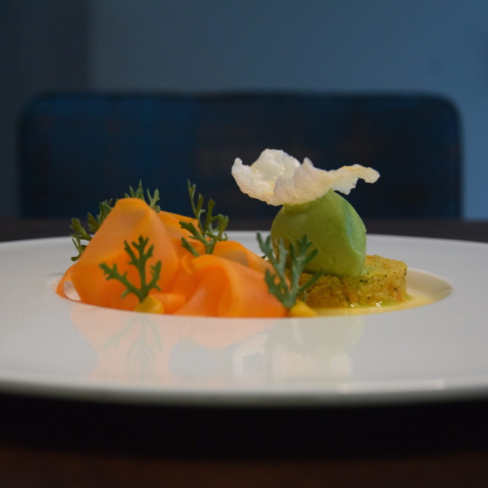
| 営業時間 | 美食部門 水〜土 18:00〜22:00／ビストロ 火〜金 12:00〜14:00・18:00〜22:00、土 18:00〜22:00 |
|---|---|
| 定休日 | 日・月・祝日（2026年10月29日（木）は夜のみ臨時休業） |
| 住所 | Äußere Sulzbacher Straße 118, 90491 Nürnberg |
| 予約 | 推奨（公式サイトの予約ページ・電話・メール reservierung@meierszweisinn.de。6人以上は卓ごとに同じコース） — ☎ +49 911 92300823 ／ 公式サイト |
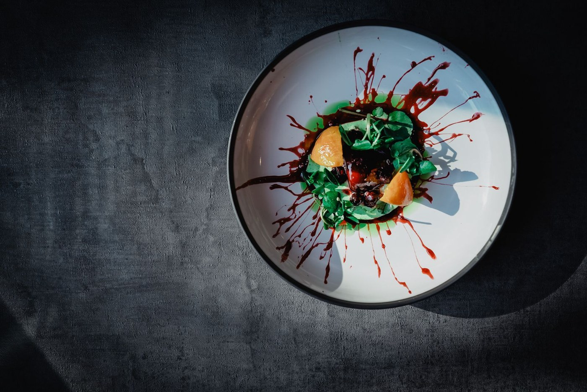
| 営業時間 | 水〜金 12:00〜13:15・18:30〜21:15、火・土 18:30〜21:00（料理の受付時間。店は昼14:30・夜24:00まで） |
|---|---|
| 定休日 | 日・月 |
| 住所 | Johannisstraße 38, 90419 Nürnberg |
| 予約 | 要（公式サイトの予約ボタン・電話。24時間以内の取消・無断欠席は1人65ユーロ。昼13時以降は3皿、夜20時以降は4皿まで） — ☎ +49 911 396215 ／ 公式サイト |
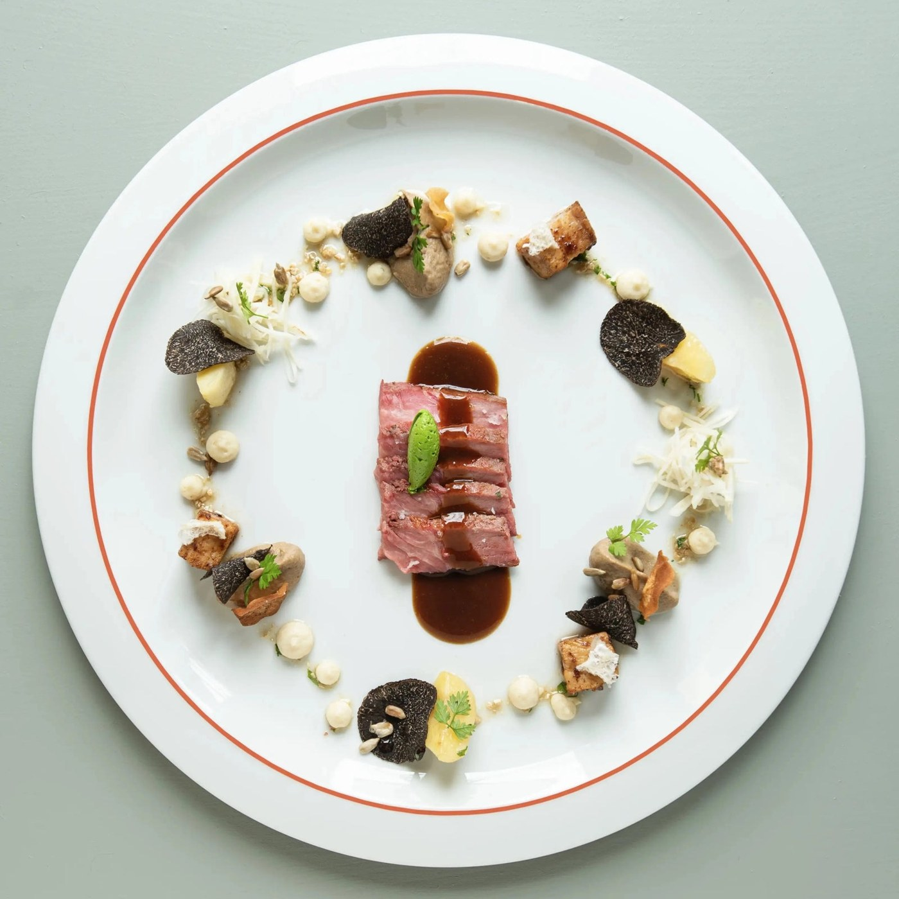
| 営業時間 | 火〜土 18:00〜（ミシュランの頁では24:00まで） |
|---|---|
| 定休日 | 日・月 |
| 住所 | Schranke 9, 90489 Nürnberg |
| 予約 | 要（公式サイトの「Tisch reservieren（席を予約）」・電話・メール info@restaurant-entenstuben.de） — ☎ +49 911 5209128 ／ 公式サイト |
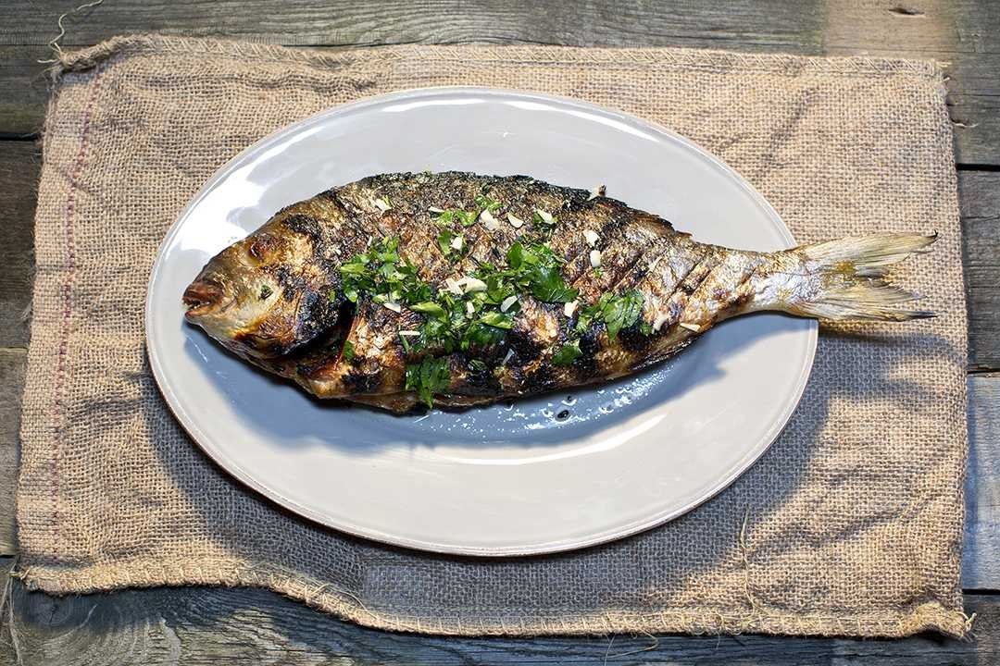
| 営業時間 | 火〜土 12:00〜14:00／18:30〜（終了時刻の記載なし） |
|---|---|
| 定休日 | 日曜・月曜 |
| 住所 | Schleifweg 31-33, 90409 Nürnberg |
| 予約 | 推奨（公式サイトのオンライン予約。時間帯ごとに人数枠があり、店は事前予約を求めている。営業時間外は電話） — ☎ +49 911 289426 ／ 公式サイト |
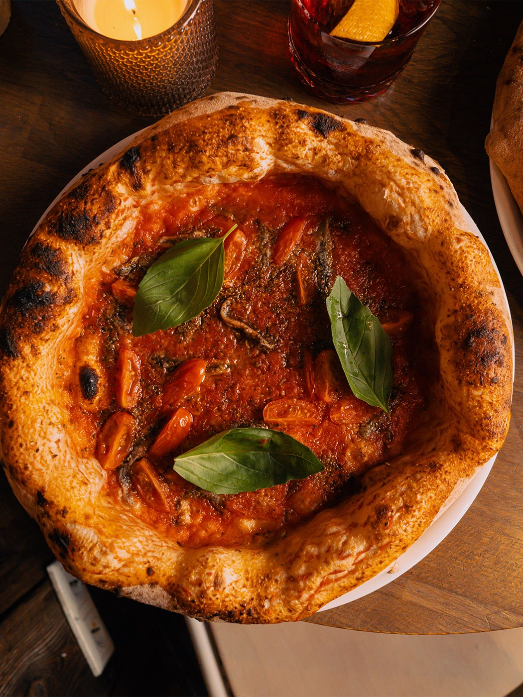
| 営業時間 | 月〜木 17:00〜23:00／金 17:00〜24:00／土 12:00〜24:00／日 17:00〜22:00（公式サイト下部に「月〜金17:00〜24:00、土12:00〜24:00、日17:00〜23:00」の別表記あり） |
|---|---|
| 定休日 | なし（無休） |
| 住所 | Adlerstraße 28, 90403 Nürnberg |
| 予約 | 推奨（公式サイトのオンライン予約で20名まで。20時までの予約は滞在1時間半まで、21名以上は団体フォーム） — ☎ +49 911 95328350 ／ 公式サイト |
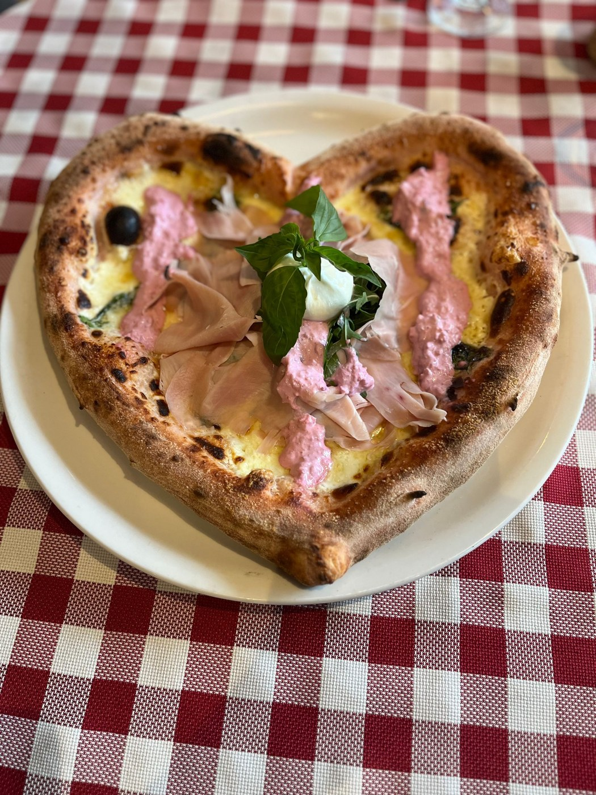
| 営業時間 | 月〜木 11:30〜15:00／17:00〜23:00、金・土 11:30〜24:00、日 11:30〜23:00 |
|---|---|
| 定休日 | なし（無休） |
| 住所 | Augustinerstraße 2, 90403 Nürnberg |
| 予約 | 推奨（公式サイトの予約ページ、または電話・メール） — ☎ +49 911 5094417 ／ 公式サイト |
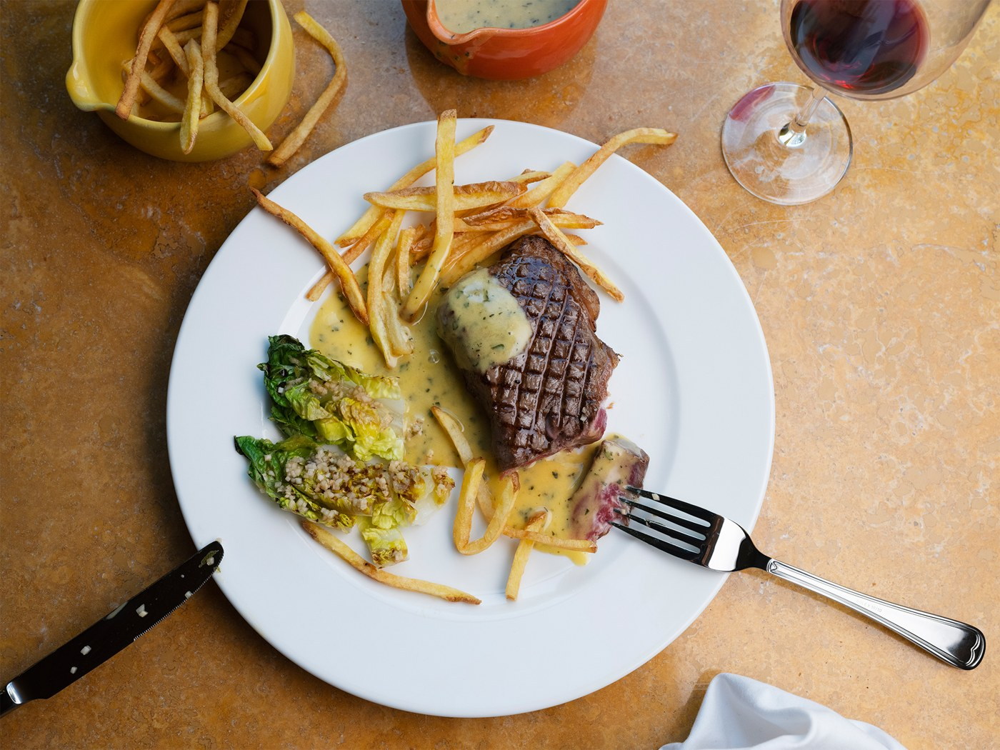
| 営業時間 | 月〜金 6:30〜24:00／土 7:00〜24:00／日 7:00〜22:00（朝食〜11:00、温かい料理 12:00〜21:00〈日曜は〜20:00〉、パティスリー 14:00〜17:00、バー 18:00〜） |
|---|---|
| 定休日 | なし（無休） |
| 住所 | Augustinerhof 1, 90403 Nürnberg |
| 予約 | 推奨（公式サイトのオンライン予約〈Gastronovi〉。マティネ・アフタヌーンティーは要予約） — ☎ +49 911 376766270 ／ 公式サイト |
| 営業時間 | 昼：日曜のみ 12:00〜14:00／夜：水〜日 18:00〜22:00 |
|---|---|
| 定休日 | 月曜・火曜（火曜は2026年9月15日から定休） |
| 住所 | Gabelsbergerstraße 76, 90459 Nürnberg |
| 予約 | 推奨（電話。店が電話予約を勧めている） — ☎ +49 911 94431090 ／ 公式サイト |
| 営業時間 | 月〜木 11:30〜14:30／17:30〜22:00、金 11:30〜14:30／17:00〜22:30、土 12:00〜15:00／17:00〜22:30、日・祝 12:00〜15:00／17:00〜22:00（15:00〜17:00はバー営業のみ） |
|---|---|
| 定休日 | なし（無休） |
| 住所 | Luitpoldstraße 3, 90402 Nürnberg |
| 予約 | 可（電話・メール。持ち帰りはウェブショップ） — ☎ +49 911 66486801 ／ 公式サイト |
| 営業時間 | 火〜日 17:30〜22:00 |
|---|---|
| 定休日 | 月曜 |
| 住所 | Pirckheimerstraße 75, 90409 Nürnberg |
| 予約 | 推奨（公式サイトの予約ツール。特に木〜土） — ☎ +49 911 5815883 ／ 公式サイト |
| 営業時間 | 昼：水〜日 11:30〜14:30／夜：毎日 17:00〜23:00 |
|---|---|
| 定休日 | なし（月・火は夜のみ） |
| 住所 | Innere Laufer Gasse 22, 90403 Nürnberg |
| 予約 | 推奨（公式サイトの予約フォームで20名まで。当日は電話） — ☎ +49 911 209531 ／ 公式サイト |
| 営業時間 | 月〜金 11:00〜19:00／土 11:00〜18:00 |
|---|---|
| 定休日 | 日曜 |
| 住所 | Lorenzer Straße 29, 90402 Nürnberg |
| 予約 | 不要（予約の案内はなく来店順。持ち帰りは電話で事前注文可） — ☎ +49 911 6217417 ／ 公式サイト |
| 営業時間 | 火〜金 11:30〜22:00（昼定食 11:30〜15:00）／土 12:00〜22:00／日 15:00〜22:00 |
|---|---|
| 定休日 | 月曜 |
| 住所 | Klaragasse 9, 90402 Nürnberg |
| 予約 | 推奨（公式サイトのオンライン予約） — ☎ +49 911 24272095 ／ 公式サイト |
| 営業時間 | 月〜木 6:00〜0:30／金・土 6:00〜翌5:00／日・祝 6:00〜翌1:00（公式サイト） |
|---|---|
| 定休日 | なし（年中無休の記載） |
| 住所 | Gostenhofer Hauptstraße 18, 90443 Nürnberg |
| 予約 | 可（電話または公式サイトのフォーム。店からの確認連絡で成立） — ☎ +49 911 2744411 ／ 公式サイト |
| 営業時間 | 月〜土 11:00〜22:00／日 17:00〜21:00（公式サイト） |
|---|---|
| 定休日 | なし |
| 住所 | Äußerer Laufer Platz 9, 90403 Nürnberg |
| 予約 | 可（公式サイトから resmio で予約） — ☎ +49 911 25324476 ／ 公式サイト |
| 営業時間 | 日〜木 11:30〜22:00／金・土 11:30〜22:30（公式サイト） |
|---|---|
| 定休日 | なし |
| 住所 | Königstraße 2, 90402 Nürnberg |
| 予約 | 推奨（夜は予約が望ましいと Vegan Guide。電話または公式サイトの予約ページ） — ☎ +49 911 23738808 ／ 公式サイト |
| 営業時間 | 火〜日 11:30〜14:30／17:30〜22:30 |
|---|---|
| 定休日 | 月曜 |
| 住所 | Heerwagenstraße 33, 90489 Nürnberg |
| 予約 | 可（公式サイトの予約ページまたは電話） — ☎ +49 1521 1542593 ／ 公式サイト |
| 営業時間 | 火〜土 11:00〜23:00（昼定食12:00〜15:00、ライスターフェルは18:00〜）／月 11:00〜17:00／日 13:00〜17:00 |
|---|---|
| 定休日 | なし（月・日は夕方まで） |
| 住所 | Obere Wörthstraße 10, 90403 Nürnberg |
| 予約 | 推奨（公式サイトから resmio で予約、または電話） — ☎ +49 911 88997988 ／ 公式サイト |
| 営業時間 | 火〜土 11:00〜14:30／17:00〜22:30、日 12:00〜22:00 |
|---|---|
| 定休日 | 月曜 |
| 住所 | Erlenstegenstraße 95, 90491 Nürnberg |
| 予約 | 推奨（電話。resmio でも予約可） — ☎ +49 911 58084495 ／ 公式サイト |
| 営業時間 | 火〜木 12:00〜23:00／金 12:00〜24:00／土 14:00〜24:00／日 14:00〜19:00（日曜は料理なし） |
|---|---|
| 定休日 | 月曜 |
| 住所 | Gostenhofer Hauptstraße 73, 90443 Nürnberg |
| 予約 | 可（公式サイトのフォーム。翌日以降の予約のみ） — ☎ +49 911 66463990 ／ 公式サイト |
| 営業時間 | 2026年11月27日〜12月24日 毎日10:00〜21:00（11/27は22:00まで、12/24は14:00まで） |
|---|---|
| 定休日 | 会期外（12月25日〜翌年11月下旬） |
| 住所 | Hauptmarkt, 90403 Nürnberg |
| 予約 | 不可（屋台で並んで買う） — 公式サイト |
| 営業時間 | 月〜土（市の掲示は7:00〜20:00、市場公式サイトの中心販売時間は9:00〜18:00。店ごとに異なる） |
|---|---|
| 定休日 | 日曜・祝日 |
| 住所 | Hauptmarkt 18, 90403 Nürnberg（市場局が掲げる所在地） |
| 予約 | 不要 — 公式サイト |
| 営業時間 | 中央広場の販売所：月〜金 6:00〜18:00、土 8:00〜17:00 |
|---|---|
| 定休日 | 日曜（中央広場の販売所） |
| 住所 | Hauptmarkt 11, 90403 Nürnberg |
| 予約 | 不要 — ☎ +49 911 23555348 ／ 公式サイト |
| 営業時間 | 月〜金 7:30〜17:30、土 7:30〜12:30（昼の日替わりは平日） |
|---|---|
| 定休日 | 日曜・祝日 |
| 住所 | Ludwig-Feuerbach-Straße 42, 90489 Nürnberg |
| 予約 | 不要（パーティー料理の注文は電話・メール） — ☎ +49 911 550967 ／ 公式サイト |
| 営業時間 | 月〜金 7:00〜18:00、土日 7:30〜18:00 |
|---|---|
| 定休日 | なし（公式の営業時間に休業日の記載なし） |
| 住所 | Augustinerhof 1, 90403 Nürnberg |
| 予約 | 不要（公式サイトに予約の項目あり） — ☎ +49 911 3767662-75 ／ 公式サイト |
| 営業時間 | 月〜土 10:00〜18:00（クリスマス市の期間は変わることがある）。カフェは1月〜10月 |
|---|---|
| 定休日 | 日・祝日 |
| 住所 | Hauptmarkt 7, 90403 Nürnberg |
| 予約 | 不要（体験はメール vertrieb@wicklein.de で事前に申し込み） — 公式サイト |
| 営業時間 | 1〜9月 月〜金 9:00〜18:00・土 9:00〜13:00／10月 月〜金 10:00〜18:00・土 9:00〜14:00／11月 月〜金 8:30〜19:00・土 9:00〜16:00／12月 月〜金 8:30〜19:00・土 9:00〜18:00 |
|---|---|
| 定休日 | 日・祝日（12月24日・31日は9:00〜13:00） |
| 住所 | Zollhausstraße 30, 90469 Nürnberg |
| 予約 | 不要（「レープクーヘンの世界」の見学は15人以上の団体のみ・要予約） — ☎ +49 911 8966278 ／ 公式サイト |
| 営業時間 | ベルク通りの店: 月〜土 7:00〜18:00／本店（マティルデン通り28）: 月〜金 6:00〜18:00・土 6:00〜13:00・日 8:00〜11:00 |
|---|---|
| 定休日 | ベルク通りの店は日曜（本店は日曜朝のみ営業） |
| 住所 | Bergstraße 23, 90403 Nürnberg |
| 予約 | 不要 — 公式サイト |
| 営業時間 | 菓子売り場 火〜土 8:00〜17:30／カフェ 火〜土 9:00〜17:00（12月とアドヴェントの日曜は特別営業あり） |
|---|---|
| 定休日 | 日・月 |
| 住所 | Winklerstraße 29, 90403 Nürnberg |
| 予約 | 不要 — ☎ +49 911 225179 ／ 公式サイト |
| 営業時間 | 月〜土 9:00〜18:00 |
|---|---|
| 定休日 | 日・祝日 |
| 住所 | Breite Gasse 79, 90402 Nürnberg |
| 予約 | 不要（大人数は電話で相談） — ☎ +49 911 2308420 ／ 公式サイト |
| 営業時間 | 水〜土 11:00〜18:00、日・祝日 14:00〜17:00 |
|---|---|
| 定休日 | 月・火（観光局の頁は火曜も営業と記載。公式に従う） |
| 住所 | Weintraubengasse 2, 90403 Nürnberg |
| 予約 | 不要（予約注文・相談は電話・メール info@tafelzier.de） — ☎ +49 911 13137340 ／ 公式サイト |
| 営業時間 | ゴステンホーフの焙煎所: 月〜木 10:00〜17:00、金・土 10:00〜16:00／旧市街（クレーマー・ウント・コー内）: 月〜土 10:00〜18:00／ベーレンシャンツェ: 火〜日 10:00〜18:00 |
|---|---|
| 定休日 | ゴステンホーフの焙煎所は日曜 |
| 住所 | Obere Kieselbergstraße 13, 90429 Nürnberg |
| 予約 | 不要 — ☎ +49 911 2740664 ／ 公式サイト |
| 営業時間 | 月〜土 8:00〜19:00、日・祝日 10:00〜19:00（ヴァイスゲルバー小路の店） |
|---|---|
| 定休日 | なし（公式の営業時間では年中無休） |
| 住所 | Weißgerbergasse 38, 90403 Nürnberg |
| 予約 | 不要 — ☎ +49 911 66960061 ／ 公式サイト |
| 営業時間 | 月〜土 10:00〜18:00 |
|---|---|
| 定休日 | 日・祝日 |
| 住所 | Hauptmarkt 11, 90403 Nürnberg |
| 予約 | 不要 — ☎ +49 911 21709815 ／ 公式サイト |
| 営業時間 | 毎日 12:00〜（日〜木は19:00まで、金・土は20:00まで。悪天候の日は早く閉めることがある） |
|---|---|
| 定休日 | なし（公式の営業時間では毎日営業） |
| 住所 | Augustinerhof 1, 90403 Nürnberg |
| 予約 | 不要 — ☎ +49 911 376766277 ／ 公式サイト |
本ガイドは個人利用目的で作成。掲載情報は2026年10月時点の調査に基づく。写真出典: 各店の公式サイト・公式SNS、および観光局・地域情報サイト等の掲載写真（著作権は各サイト・各撮影者に帰属）。引用元は店ごとにカード内へ明記。